Argosy — Retirement Companion User Guide
How to actually use the site, with real screenshots of the live page at http://localhost:1337/retirement.
1. What Argosy is
Argosy is a personal-finance system glued together from two pieces:
- An always-on Python orchestrator that watches your portfolio and the wider market continuously — prices, news, macro releases, your plan-adherence — running a few different rhythms (minute loop during market hours, hour loop, daily brief at 09:00, weekly review Sunday evening, monthly cycle on the 1st, annual sweep in January).
- A Next.js dashboard at
localhost:1337where you read the state, approve proposals, and negotiate with the agent fleet.
The engine never asks you to act unless something interesting happens; when it does it convenes a fleet of AI specialists (analysts, debate, risk, fund manager) who debate the move before it reaches you.
/retirement cover P-of-ruin verdict, safety gates, Israeli pension structure, prediction trust layer, decision policy, expenses, tax, decumulation, balance sheet, and risk transfer.
2. Site shape
The top nav has 13 tabs. From left to right:
| Tab | What it's for | How often you visit |
|---|---|---|
| Morning glance — banners, action items, anomalies | Daily | |
| Intake. 11-stage gap tracker covering ~75 fields. Persistent panel — first-run AND every check-in. | First-run heavy; then monthly | |
| Today's positions + wealth dashboard (top of page). | Weekly | |
| Household-budget surface with sub-tabs (Monthly · Transactions · Sources · Merchants · Trips · RSU · Income). | Weekly | |
| The current draft plan from the agent fleet. Per-objection AGREE/DISAGREE/DEFER. | When synthesis lands | |
| This guide's focus. Long-term retirement truth-teller. | Monthly + on-trigger | |
| Open decision flows in flight. | When the system surfaces one | |
| Queue of trade proposals awaiting your approval. | Daily | |
| The bounded auto-trading account ($1K cap). | Monthly check-in | |
| Agent fleet activity log. | When debugging | |
| Audit-traceable file catalog (every upload). | When ingesting bank/Schwab CSVs | |
| Full decision audit log. | Rarely (provenance research) | |
| Israel-resident knowledge base (tax, UCITS, etc.). | Reference | |
| Per-feature config. | Setup only |
3. First-time setup (one-time, ~30 minutes)
Step 1 — Tell Argosy who you are →
The Advisor tab is the persistent intake panel. Side panel shows every required field as fresh stale missing. The advisor operates in gap_driven mode when you open it cold — it asks for the highest-impact missing fields first. RSU vest schedule, pension balances, mortgage details, kids' birth years (drives IDF service phase + education planning), partner's career, real estate.
You don't fill it all at once. Each answer narrows the projection. When you're done the gap tracker is mostly green.
Step 2 — Upload your data →
Bank statements (Leumi, Discount, Cal), Schwab CSVs, portfolio TSV snapshots, identity_yaml. Every upload goes through catalog_upload() so it's audit-traceable forever. Argosy ingests in the background; dashboards populate.
argosy/services/file_catalog.py::catalog_upload). The partial unique index (user_id, sha256) makes the helper idempotent — re-uploading the same file returns the existing row.
4. Daily / weekly cadence
Morning: open . Banners surface (in-flight synthesis · fleet-self-review · NVDA-PACE-vs-target · action items widget). If a safety gate trips or a recurring expense disappears, you'll see it here first.
When the agent fleet finishes a synthesis: open . Per-FM-objection AGREE/DISAGREE/DEFER toggles let you push back on any verdict; "Start new round with my decisions" re-runs the fleet with your directive.
When you're thinking long-term: open . That's what the rest of this guide covers.
5. The Retirement page
is the page that answers "can I retire? when? at what risk?" — separate from Plan because the timescales are different. Plan tracks short-term decisions ("trim NVDA by $20K this week"); Retirement tracks the 30-year math.
17 cards in display order. Top-of-page is the verdict; everything below explains the verdict + lets you stress-test it.
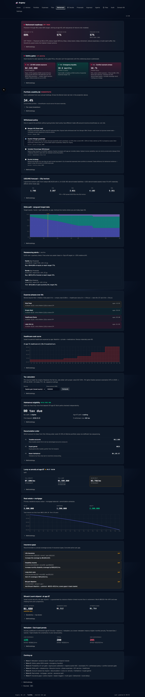
6. Hero verdict

The single most important number on the page. Reads top-to-bottom:
- Status dot + label. Red dot + OFF TRACK in this capture. Green dot would be ON TRACK; amber WARN; gray UNCERTAIN when the confidence interval straddles the target.
- Title + retirement age assumption. "P(solvent through 95) under 90% target, retiring at age 49, with sequence-of-returns risk modeled."
- Three percentile numbers. P(solvent at 75 / 85 / 95). At 95 the bootstrap 95% confidence interval is shown below in small type (
95% CI: [55% – 59%]). The CI is what drives the verdict — ON_TRACK requires the CI lower bound ≥ target; OFF_TRACK requires CI upper bound < target; otherwise UNCERTAIN. - One-sentence action. "OFF TRACK — P(solvent at 95) is 57%, below target 90% by 33pp. Likely levers: delay retirement, reduce expenses, or build cash buffer; the Sensitivity panel ranks the highest-impact actions."
- Methodology drilldown (click to expand).
7. Safety gates
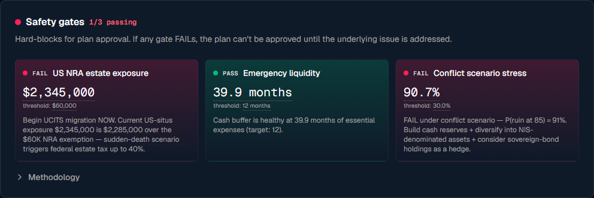
Each gate is a separate tile with a status dot, headline number, threshold, and a concrete action:
- US NRA estate exposure FAIL — Your US-situs assets (NVDA + US-domiciled ETFs at Schwab; UCITS + cash excluded per IRS rules) vs. the $60K NRA exemption. At ~$2.345M you're $2.285M over. Action: "Begin UCITS migration NOW. Sudden-death scenario triggers federal estate tax up to 40%."
- Emergency liquidity PASS — Cash buffer in months of essential expenses (essential = burn × 60%). Healthy at 39.9 months vs. 12-month target.
- Conflict scenario stress FAIL — P(ruin at 85) under stressed parameters (σ=0.40, inflation=6%, lifestyle_drift=2%). At 90.7% ruin probability, far over the 30% threshold.
The gates are intentional safeguards independent of the hero verdict — even a green retirement readiness verdict gets blocked from "approved" if any gate is red.
8. Israeli structural facts
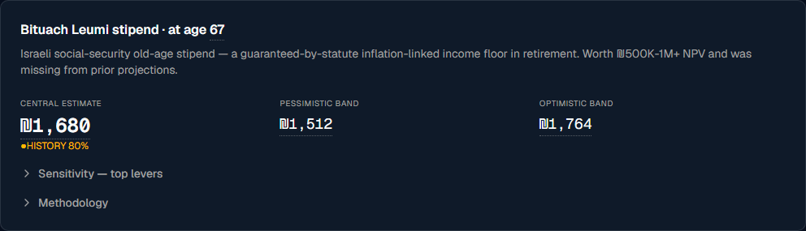
- Central estimate ₪1,680/mo for your profile (base × history factor of 0.80 since you have ~28 of 35 insured years).
- Pessimistic band ₪1,512 — what you get if rate adjustments are unfavorable + history shortfall is worse than assumed.
- Optimistic band ₪1,764 — if spouse becomes eligible and shading goes the other way.
- HISTORY 80% badge — under-full eligibility. To get a HISTORY 100% badge, contribute 7 more insured years.
- Sensitivity drilldown ranks the levers ("complete contribution history to 35y → +X NIS/mo", "spouse eligibility → +50%", "delay claiming past 67 → ~5%/yr boost").
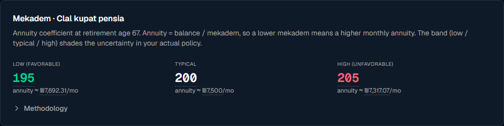
Three values shown:
- Low (favorable): 195 — annuity ≈ ₪7,692/mo (if mekadem turns out lower than typical)
- Typical: 200 — annuity ≈ ₪7,500/mo (published Clal value)
- High (unfavorable): 205 — annuity ≈ ₪7,317/mo
The band width (±2.5%) covers spouse-benefit toggle + mortality-table generation envelope. To replace the band with your exact policy mekadem, add it to identity_yaml.retirement_reference_overrides.mekadem.clal_pensia.
9. Prediction trust layer
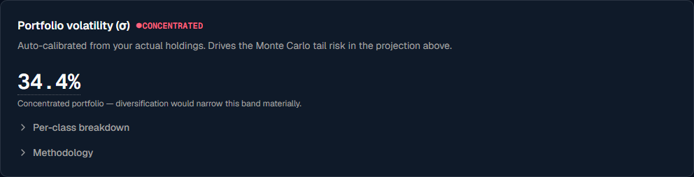
At 34.4% with a CONCENTRATED badge. Weighted average of asset-class volatilities — the NVDA concentration drives σ way above the diversified-equity default of 0.18. Per-class breakdown is hidden inside the drilldown.
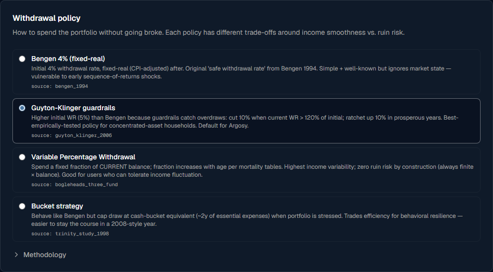
- Bengen 4% (fixed-real) — original 1994 safe-withdrawal rate. Simple but vulnerable to early sequence shocks.
- Guyton-Klinger guardrails ← default. 5% initial WR with ratchet/cut rules. Best-empirically-tested for concentrated-asset households.
- Variable Percentage Withdrawal — % of CURRENT balance per age band. Zero literal-zero ruin risk; income varies.
- Bucket strategy — Bengen-like but caps draw at 5% of remaining portfolio in stressed years.
Each radio button has a hover-readable rationale and a source: bengen_1994 / guyton_klinger_2006 citation that links to the Sources panel at the bottom of the page.
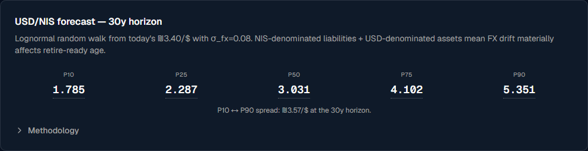
P10/P25/P50/P75/P90 percentile band at the 30-year horizon. The P10–P90 spread tells you how wide your retirement adequacy could swing from FX alone. For a USD-asset / NIS-liability household this is the #1 silent risk in projections that use a fixed snapshot FX rate.
10. Decision policy
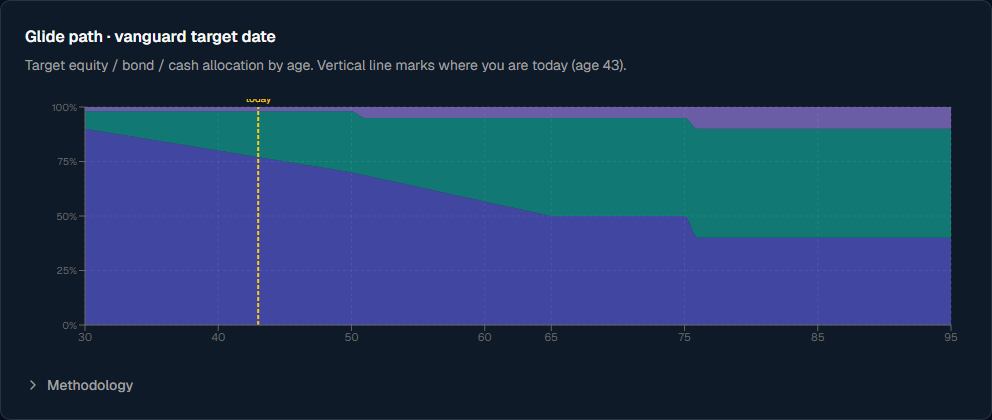
Reads as a stacked-area chart: equity (blue) collapses from ~90% at age 30 to 50% at 65 to 40% at 75+. Bonds (teal) rise inversely. Cash (purple) is a thin sliver throughout.
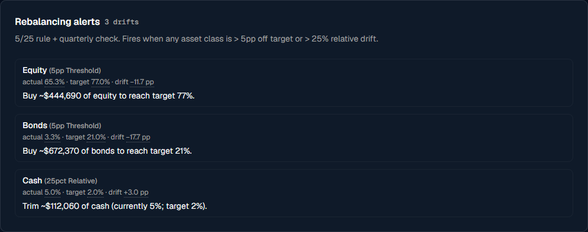
Each alert tile shows actual % vs target % vs signed drift in percentage points + a concrete buy/sell proposal sized in USD ("Trim ~$XXX of equity to reach target 77%"). When all classes are within band, the card shows a single ALIGNED message.
11. Expense modeling
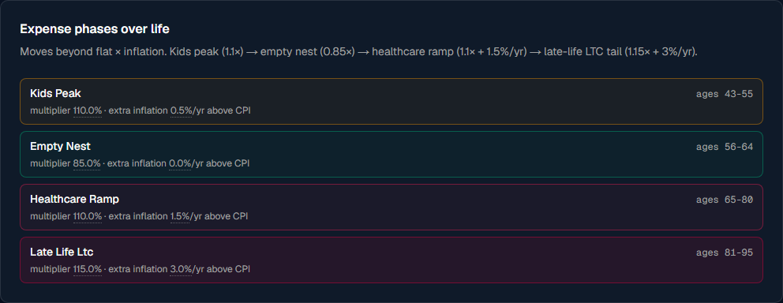
Four phases:
- kids_peak 1.10× (ages 43-55; lessons + college prep)
- empty_nest 0.85× (56-64)
- healthcare_ramp 1.10× + 1.5%/yr above CPI (65-80)
- late_life_ltc 1.15× + 3%/yr (81-95)
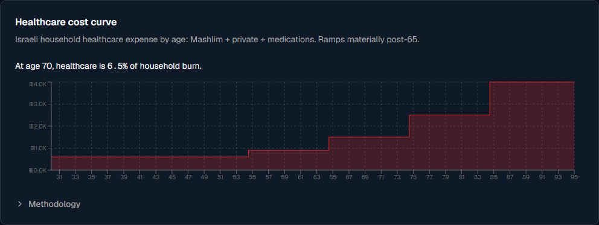
At age 70 healthcare is shown as a fraction of your household burn — surfaced as a tooltip-explainable number above the chart.
12. Tax
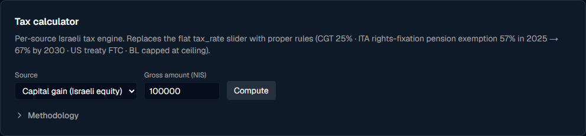
Source selector: Capital gain (Israeli equity) · US-source dividend (FTC) · Israeli dividend · Pension annuity (post-67) · Salary · RSU vest. Output: gross, Israeli tax, US treaty credit, Bituach Leumi, net, effective rate.
For US dividends the engine uses the foreign-tax-credit interaction (Israeli 25% on gross minus 15% US treaty withholding, never negative) per the 1995 US-Israel treaty. For pension annuity post-67, the rights-fixation exemption regime (57% in 2025 stepping to 67% by 2030) applies to the qualifying portion before marginal tax.
Shows whether you can withdraw hishtalmut tax-free RIGHT NOW (badge: TAX-FREE NOW if either path is met, otherwise WAITING with countdown). The two paths are independent:
- 6-year-from-first-deposit (employee-deposited)
- Age-67 lump (any holding period)
If neither is met, the card shows "× XX% marginal" — what the early-withdrawal tax would be.
13. Decumulation
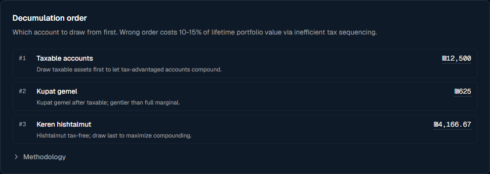
Numbered list — each step is one account with the monthly draw + rationale. The default order respects Israeli tax efficiency:
- Pension annuity (post-67; already-converted, taxed under rights-fixation)
- Taxable accounts (only gains taxed at 25%; cost-basis returns tax-free)
- Kupat gemel (per-vehicle rules; pre-2008 vs post-2008)
- Hishtalmut last (tax-free path; maximize compounding)
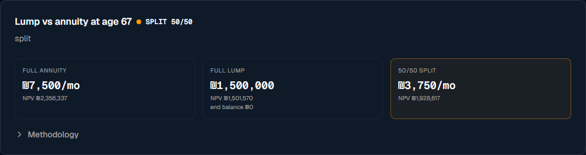
Three tiles side-by-side (Full annuity / Full lump / 50-50 split). The recommendation badge at the top right says which path the heuristic picks; the matching tile gets a colored outline. Recommendation logic:
- If monthly annuity covers monthly expense need → take annuity (safest; eliminates sequence-of-returns risk on essential expenses)
- If 4%-rule lump > annuity × 1.5 → take lump (worth the upside)
- Otherwise → split 50/50 (annuity floor + lump upside)
14. Balance sheet
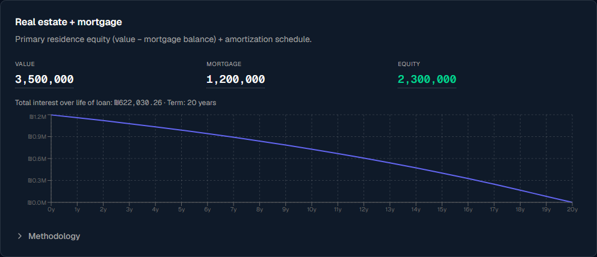
Top: 3-cell grid showing Value / Mortgage / Equity (in green when positive). Below: amortization line chart of remaining principal over time, dropping smoothly to ₪0 at the end of the term. Total interest paid over the life of the loan is called out above the chart.
15. Risk transfer
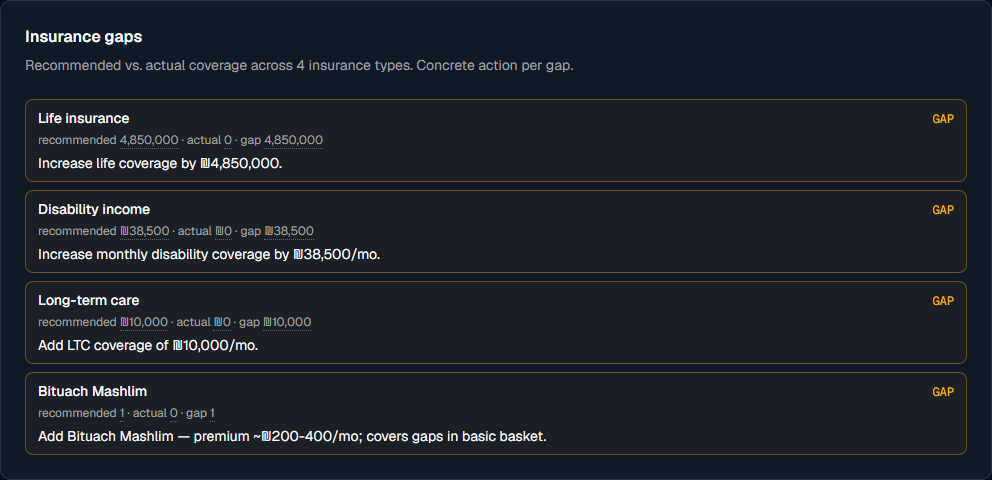
Each row shows recommended vs actual + a colored badge (GAP if shortfall, ADEQUATE if covered) + a concrete next action ("Increase life coverage by ₪6,200,000"). Four types: Life · Disability · Long-term care · Bituach Mashlim.
16. Sources panel
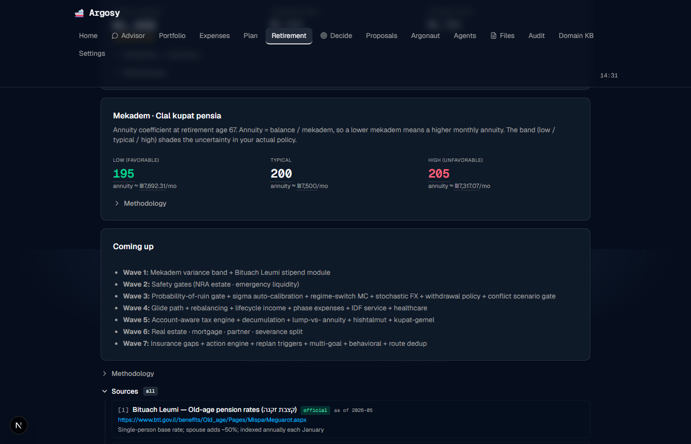
Every value on the page has a source_id field that points to a registry entry. The Sources panel renders those entries as a numbered bibliography. Kind badges:
- official — Bituach Leumi tables, Israel Tax Authority procedures, IRS publications, US-Israel treaty
- research — Bengen 1994 + 2020, Guyton-Klinger 2006, Trinity study, Damodaran ERP, Vanguard CMM, Bogleheads
- best_effort — Pension fund tables (Clal, Migdal, Menorah) where exact values may differ per-policy
- derived — Argosy computations marker
Currently 19 sources in the registry. Add per-user sources via argosy/data/sources_user.yaml (gitignored).
17. Tooltip convention
Every number on every retirement page is wrapped in the same hover-explain primitive. Look for the dotted-underline:
- Mouse over (or focus via Tab key) → popover appears.
- Popover shows: value with units, rationale (1-3 sentences), alternatives considered, freshness warning if the source is stale, and a
src: source_id · YYYY-MMfooter. - Click the source link → page scrolls to the Sources panel and highlights that entry.
The whole page reads like a research paper that happens to be a dashboard. If a number surprises you, hover it; if you don't trust the source, scroll to Sources and read the citation.
18. Your decision loop
- Open Monday morning.
- Glance at the hero. Green ON_TRACK? → close the tab, nothing to do. Amber WARN or gray UNCERTAIN? → keep reading. Red OFF_TRACK? → this is your week's priority.
- Check the Safety Gates row. Any FAIL? → that's the highest-leverage fix (right now: UCITS migration to address NRA estate exposure).
- Try the Withdrawal Policy selector. Switch from Guyton-Klinger to Bengen / VPW / Bucket. Watch the hero re-compute. If nothing moves it materially, the projection is constrained by something structural (income vs expenses, not policy choice).
- Look for the Sensitivity drilldowns inside each card. Each one ranks the top 3 levers that move that card's number.
- If the page is telling you "your plan doesn't work," open and use the per-objection AGREE/DISAGREE/DEFER toggles to negotiate with the agent fleet on what assumptions to revise.
- Acute action items (this week / this month) live on Home, in the Action items widget. The Retirement page surfaces the long-term picture; Home surfaces what's due now.
19. Replan triggers
You don't have to remember to re-check. Argosy fires automatic recomputes on:
- Market drawdown > 15% peak-to-trough
- Job change (yours or partner's)
- Tax law change (ITA or Bituach Leumi rule update)
- Health event (LTC onset, major illness)
- FX shock > 10% in a month
- Life event (birth, death, marriage, divorce, kid IDF service start)
- User request via the page
When a trigger fires the verdict re-runs and the home banner shows what changed.
20. Bugs + UX issues found during this capture
Live Playwright run on 2026-05-28: 17/17 cards rendered, 0 console errors, 0 failed network requests. But the screenshots surface real UX issues worth fixing:
sigma_annual from compute_ruin_probability (0.18). The UI's RuinProbabilityHero doesn't pass the calibrated σ as a query param. Net effect: the card's number is right but the verdict isn't actually consuming it.Fix: Pass
sigma_annual from the SigmaCalibrationCard's result through the page state to the hero. Currently both run independently. (Note: the regime-switch engine has its own per-regime σ values that override this anyway, so the impact is most visible when the user toggles to engine=calm for the legacy lognormal path.)
split as plain text (the recommendation enum value rendered raw instead of being formatted into a sentence). Should either be removed or expanded into the rationale text.
- All 17 cards render without console errors or network failures.
- Hero verdict updates correctly when policy changes (server roundtrip ~1-2s).
- The Sources panel opens cleanly and shows all 19 registered sources with kind badges.
- The §0.1 visualization standard (Hero + Chart + Drilldown) is consistent across every card.
- All values are dotted-underline tooltip-explainable.
- Real numbers come from real computations: BL ₪1,680/mo at 80% history, mekadem 195/200/205 band, NRA exposure $2.345M, etc.
Generated 2026-05-28. Screenshots via Playwright + Chromium 1.59.0 at viewport 1400×900, device scale 1.
Source: argosy/services/.progress/user_guide/capture.py.
Bug log: docs/user-guide/bug_log.json.